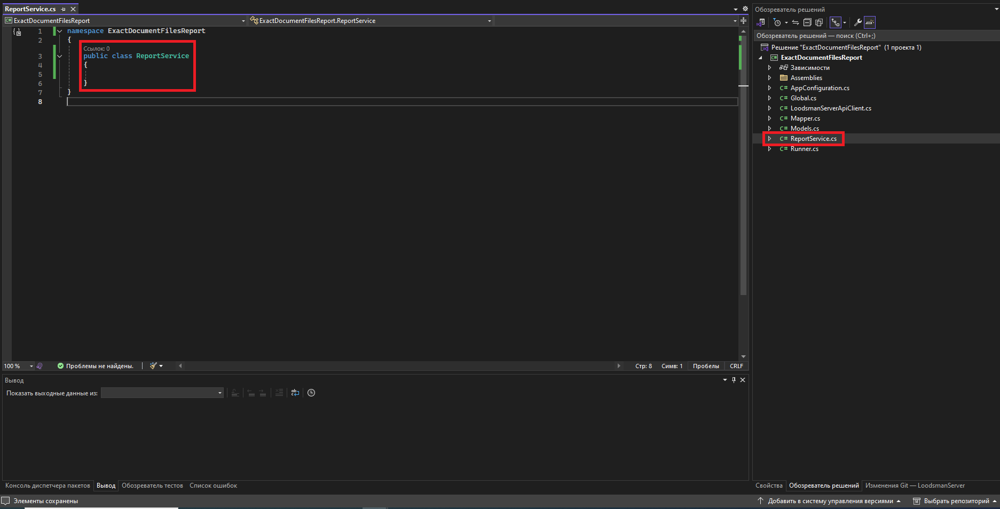
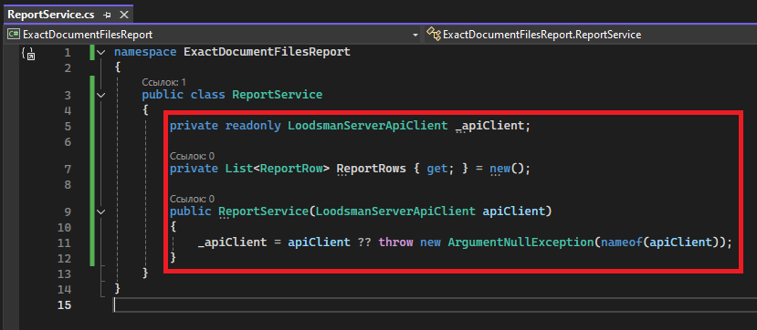
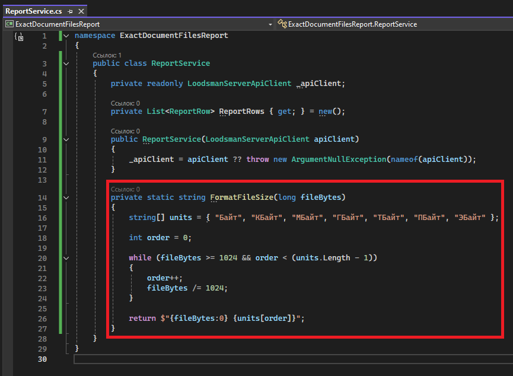
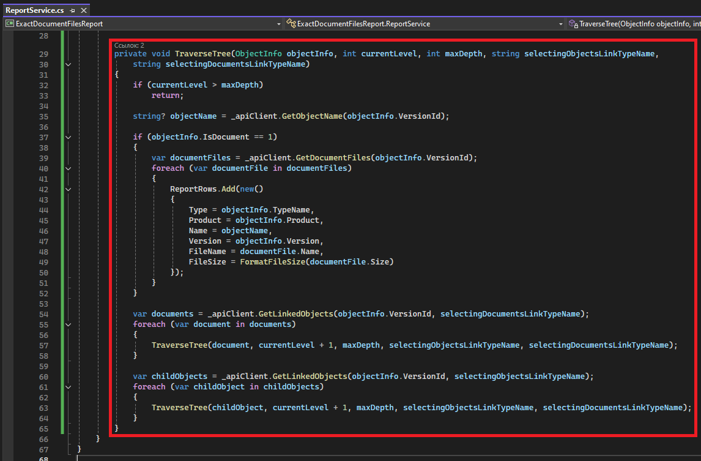
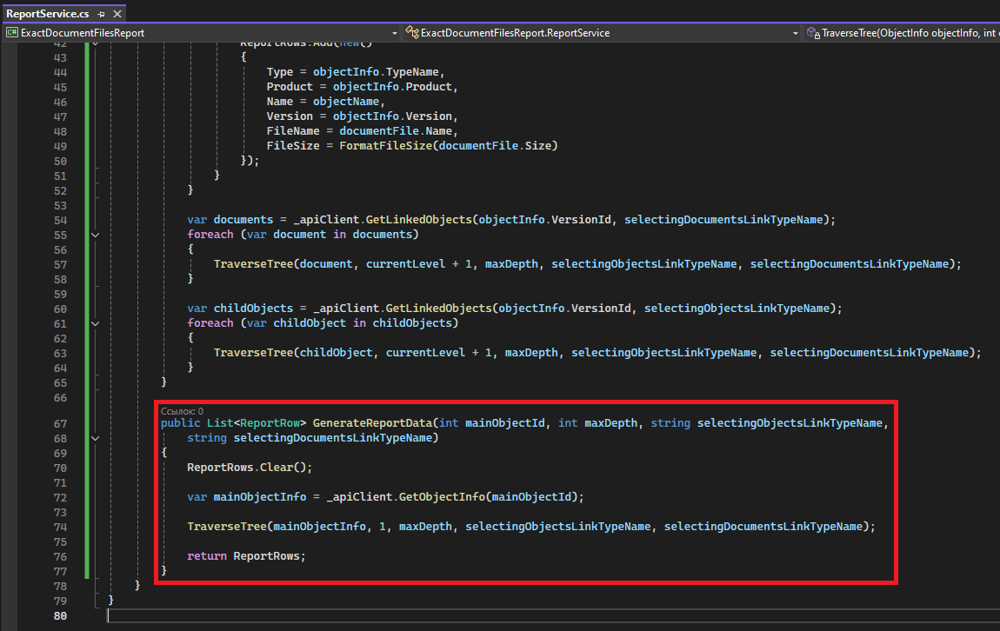

Формирование данных для отчета
Для сбора всех необходимых данных отчёта создадим отдельный класс ReportService.cs:

Для взаимодействия с сервером приложений ЛОЦМАН:PLM используем ранее созданный класс LoodsmanServerApiClient и инициализируем его в конструкторе класса.
Для накопления полученных данных используем ранее созданный класс модели ReportRow в виде списка:

Логика формирования данных для отчёта
Отчёт включает информацию о файлах, прикреплённых к документам.
Для каждого файла будет необходимо создать отдельную строку с информацией о родительском документе.
Если документ не имеет файлов, он не создаёт записей в отчёте, но обход дерева для его дочерних документов и объектов продолжается.
Это позволяет получить файлы из глубоких уровней вложенности, даже если промежуточные документы не содержат собственных файлов.
Так как в результирующей таблице присутствует столбец с размером файла, и размер файла может находиться в широком диапазоне - от байтов до терабайтов, то создадим вспомогательный метод, который приводит размер файла в человекочитаемый вид:

Логика данного метода состоит в том, чтобы посчитать какое количество раз файл делится на 1024 - это позволит понять порядок размера файла.
Обозначения для каждого порядка хранятся в массиве с соответствующим индексом.
Для формирования данных отчёта нужно рекурсивно обойти дерево дочерних объектов и документов. Для этого создадим приватный метод TraverseTree:

Этот метод для каждого входного объекта собирает информацию о прикреплённых файлах и сохраняет её как строку ReportRow, а затем получает информацию о связанных объектах и рекурсивно уходит вглубь дерева на заданную глубину.
Теперь создадим основной метод класса для отбора данных - GenerateReportData:

Полный код класса с методами сбора данных для формирования отчета:
namespace ExactDocumentFilesReport
{
public class ReportService
{
private readonly LoodsmanServerApiClient _apiClient;
private List<ReportRow> ReportRows { get; } = new();
public ReportService(LoodsmanServerApiClient apiClient)
{
_apiClient = apiClient ?? throw new ArgumentNullException(nameof(apiClient));
}
private static string FormatFileSize(long fileBytes)
{
string[] units = { "Байт", "КБайт", "МБайт", "ГБайт", "ТБайт", "ПБайт", "ЭБайт" };
int order = 0;
while (fileBytes >= 1024 && order < (units.Length - 1))
{
order++;
fileBytes /= 1024;
}
return $"{fileBytes:0} {units[order]}";
}
private void TraverseTree(ObjectInfo objectInfo, int currentLevel, int maxDepth, string selectingObjectsLinkTypeName,
string selectingDocumentsLinkTypeName)
{
if (currentLevel > maxDepth)
return;
string? objectName = _apiClient.GetObjectName(objectInfo.VersionId);
if (objectInfo.IsDocument == 1)
{
var documentFiles = _apiClient.GetDocumentFiles(objectInfo.VersionId);
foreach (var documentFile in documentFiles)
{
ReportRows.Add(new()
{
Type = objectInfo.TypeName,
Product = objectInfo.Product,
Name = objectName,
Version = objectInfo.Version,
FileName = documentFile.Name,
FileSize = FormatFileSize(documentFile.Size)
});
}
}
var documents = _apiClient.GetLinkedObjects(objectInfo.VersionId, selectingDocumentsLinkTypeName);
foreach (var document in documents)
{
TraverseTree(document, currentLevel + 1, maxDepth, selectingObjectsLinkTypeName, selectingDocumentsLinkTypeName);
}
var childObjects = _apiClient.GetLinkedObjects(objectInfo.VersionId, selectingObjectsLinkTypeName);
foreach (var childObject in childObjects)
{
TraverseTree(childObject, currentLevel + 1, maxDepth, selectingObjectsLinkTypeName, selectingDocumentsLinkTypeName);
}
}
public List<ReportRow> GenerateReportData(int mainObjectId, int maxDepth, string selectingObjectsLinkTypeName,
string selectingDocumentsLinkTypeName)
{
ReportRows.Clear();
var mainObjectInfo = _apiClient.GetObjectInfo(mainObjectId);
TraverseTree(mainObjectInfo, 1, maxDepth, selectingObjectsLinkTypeName, selectingDocumentsLinkTypeName);
return ReportRows;
}
}
}